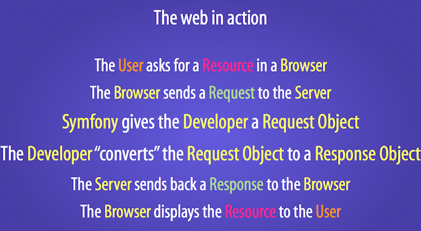

The HttpKernel Component¶
The HttpKernel component provides a structured process for converting aRequestinto aResponseby making use of the EventDispatcher. It’s flexible enough to create a full-stack framework (Symfony), a micro-framework (Silex) or an advanced CMS system (Drupal).
Installation¶
You can install the component in 2 different ways:
- Install it via Composer (
symfony/http-kernelon Packagist); - Use the official Git repository (https://github.com/symfony/HttpKernel).
The Workflow of a Request¶
Every HTTP web interaction begins with a request and ends with a response. Your job as a developer is to create PHP code that reads the request information (e.g. the URL) and creates and returns a response (e.g. an HTML page or JSON string).
Typically, some sort of framework or system is built to handle all the repetitive tasks (e.g. routing, security, etc) so that a developer can easily build each page of the application. Exactly how these systems are built varies greatly. The HttpKernel component provides an interface that formalizes the process of starting with a request and creating the appropriate response. The component is meant to be the heart of any application or framework, no matter how varied the architecture of that system:
namespace Symfony\Component\HttpKernel;
use Symfony\Component\HttpFoundation\Request;
interface HttpKernelInterface
{
// ...
/**
* @return Response A Response instance
*/
public function handle(
Request $request,
$type = self::MASTER_REQUEST,
$catch = true
);
}
Internally, HttpKernel::handle() -
the concrete implementation of HttpKernelInterface::handle() -
defines a workflow that starts with a Request
and ends with a Response.
The exact details of this workflow are the key to understanding how the kernel (and the Symfony Framework or any other library that uses the kernel) works.
HttpKernel: Driven by Events¶
The HttpKernel::handle() method works internally by dispatching events.
This makes the method both flexible, but also a bit abstract, since all the
“work” of a framework/application built with HttpKernel is actually done
in event listeners.
To help explain this process, this document looks at each step of the process and talks about how one specific implementation of the HttpKernel - the Symfony Framework - works.
Initially, using the HttpKernel
is really simple, and involves creating an EventDispatcher
and a controller resolver
(explained below). To complete your working kernel, you’ll add more event
listeners to the events discussed below:
use Symfony\Component\HttpFoundation\Request;
use Symfony\Component\HttpKernel\HttpKernel;
use Symfony\Component\EventDispatcher\EventDispatcher;
use Symfony\Component\HttpKernel\Controller\ControllerResolver;
// create the Request object
$request = Request::createFromGlobals();
$dispatcher = new EventDispatcher();
// ... add some event listeners
// create your controller resolver
$resolver = new ControllerResolver();
// instantiate the kernel
$kernel = new HttpKernel($dispatcher, $resolver);
// actually execute the kernel, which turns the request into a response
// by dispatching events, calling a controller, and returning the response
$response = $kernel->handle($request);
// send the headers and echo the content
$response->send();
// triggers the kernel.terminate event
$kernel->terminate($request, $response);
See “A full Working Example” for a more concrete implementation.
For general information on adding listeners to the events below, see Creating an Event Listener.
å°æŠ€å·§
Fabien Potencier also wrote a wonderful series on using the HttpKernel component and other Symfony components to create your own framework. See Create your own framework... on top of the Symfony2 Components.
1) The kernel.request Event¶
Typical Purposes: To add more information to the Request, initialize
parts of the system, or return a Response if possible (e.g. a security
layer that denies access).
Kernel Events Information Table
The first event that is dispatched inside HttpKernel::handle
is kernel.request, which may have a variety of different listeners.

Listeners of this event can be quite varied. Some listeners - such as a security
listener - might have enough information to create a Response object immediately.
For example, if a security listener determined that a user doesn’t have access,
that listener may return a RedirectResponse
to the login page or a 403 Access Denied response.
If a Response is returned at this stage, the process skips directly to
the kernel.response event.
Other listeners simply initialize things or add more information to the request.
For example, a listener might determine and set the locale on the Request
object.
Another common listener is routing. A router listener may process the Request
and determine the controller that should be rendered (see the next section).
In fact, the Request object has an “attributes”
bag which is a perfect spot to store this extra, application-specific data
about the request. This means that if your router listener somehow determines
the controller, it can store it on the Request attributes (which can be used
by your controller resolver).
Overall, the purpose of the kernel.request event is either to create and
return a Response directly, or to add information to the Request
(e.g. setting the locale or setting some other information on the Request
attributes).
注解
When setting a response for the kernel.request event, the propagation
is stopped. This means listeners with lower priority won’t be executed.
2) Resolve the Controller¶
Assuming that no kernel.request listener was able to create a Response,
the next step in HttpKernel is to determine and prepare (i.e. resolve) the
controller. The controller is the part of the end-application’s code that
is responsible for creating and returning the Response for a specific page.
The only requirement is that it is a PHP callable - i.e. a function, method
on an object, or a Closure.
But how you determine the exact controller for a request is entirely up
to your application. This is the job of the “controller resolver” - a class
that implements ControllerResolverInterface
and is one of the constructor arguments to HttpKernel.

Your job is to create a class that implements the interface and fill in its
two methods: getController and getArguments. In fact, one default
implementation already exists, which you can use directly or learn from:
ControllerResolver.
This implementation is explained more in the sidebar below:
namespace Symfony\Component\HttpKernel\Controller;
use Symfony\Component\HttpFoundation\Request;
interface ControllerResolverInterface
{
public function getController(Request $request);
public function getArguments(Request $request, $controller);
}
Internally, the HttpKernel::handle method first calls
getController()
on the controller resolver. This method is passed the Request and is responsible
for somehow determining and returning a PHP callable (the controller) based
on the request’s information.
The second method, getArguments(),
will be called after another event - kernel.controller - is dispatched.
3) The kernel.controller Event¶
Typical Purposes: Initialize things or change the controller just before the controller is executed.
Kernel Events Information Table
After the controller callable has been determined, HttpKernel::handle
dispatches the kernel.controller event. Listeners to this event might initialize
some part of the system that needs to be initialized after certain things
have been determined (e.g. the controller, routing information) but before
the controller is executed. For some examples, see the Symfony section below.
Listeners to this event can also change the controller callable completely
by calling FilterControllerEvent::setController
on the event object that’s passed to listeners on this event.
4) Getting the Controller Arguments¶
Next, HttpKernel::handle calls
getArguments().
Remember that the controller returned in getController is a callable.
The purpose of getArguments is to return the array of arguments that
should be passed to that controller. Exactly how this is done is completely
up to your design, though the built-in ControllerResolver
is a good example.
At this point the kernel has a PHP callable (the controller) and an array of arguments that should be passed when executing that callable.
5) Calling the Controller¶
The next step is simple! HttpKernel::handle executes the controller.
The job of the controller is to build the response for the given resource. This could be an HTML page, a JSON string or anything else. Unlike every other part of the process so far, this step is implemented by the “end-developer”, for each page that is built.
Usually, the controller will return a Response object. If this is true,
then the work of the kernel is just about done! In this case, the next step
is the kernel.response event.
But if the controller returns anything besides a Response, then the kernel
has a little bit more work to do - kernel.view
(since the end goal is always to generate a Response object).
注解
A controller must return something. If a controller returns null,
an exception will be thrown immediately.
6) The kernel.view Event¶
Typical Purposes: Transform a non-Response return value from a controller
into a Response
Kernel Events Information Table
If the controller doesn’t return a Response object, then the kernel dispatches
another event - kernel.view. The job of a listener to this event is to
use the return value of the controller (e.g. an array of data or an object)
to create a Response.

This can be useful if you want to use a “view” layer: instead of returning
a Response from the controller, you return data that represents the page.
A listener to this event could then use this data to create a Response that
is in the correct format (e.g HTML, JSON, etc).
At this stage, if no listener sets a response on the event, then an exception
is thrown: either the controller or one of the view listeners must always
return a Response.
注解
When setting a response for the kernel.view event, the propagation
is stopped. This means listeners with lower priority won’t be executed.
7) The kernel.response Event¶
Typical Purposes: Modify the Response object just before it is sent
Kernel Events Information Table
The end goal of the kernel is to transform a Request into a Response. The
Response might be created during the kernel.request
event, returned from the controller,
or returned by one of the listeners to the kernel.view
event.
Regardless of who creates the Response, another event - kernel.response
is dispatched directly afterwards. A typical listener to this event will modify
the Response object in some way, such as modifying headers, adding cookies,
or even changing the content of the Response itself (e.g. injecting some
JavaScript before the end </body> tag of an HTML response).
After this event is dispatched, the final Response object is returned
from handle(). In the
most typical use-case, you can then call the send()
method, which sends the headers and prints the Response content.
8) The kernel.terminate Event¶
Typical Purposes: To perform some “heavy” action after the response has been streamed to the user
Kernel Events Information Table
The final event of the HttpKernel process is kernel.terminate and is unique
because it occurs after the HttpKernel::handle method, and after the
response is sent to the user. Recall from above, then the code that uses
the kernel, ends like this:
// send the headers and echo the content
$response->send();
// triggers the kernel.terminate event
$kernel->terminate($request, $response);
As you can see, by calling $kernel->terminate after sending the response,
you will trigger the kernel.terminate event where you can perform certain
actions that you may have delayed in order to return the response as quickly
as possible to the client (e.g. sending emails).
è¦å‘Š
Internally, the HttpKernel makes use of the fastcgi_finish_request
PHP function. This means that at the moment, only the PHP FPM server
API is able to send a response to the client while the server’s PHP process
still performs some tasks. With all other server APIs, listeners to kernel.terminate
are still executed, but the response is not sent to the client until they
are all completed.
注解
Using the kernel.terminate event is optional, and should only be
called if your kernel implements TerminableInterface.
Handling Exceptions: the kernel.exception Event¶
Typical Purposes: Handle some type of exception and create an appropriate
Response to return for the exception
Kernel Events Information Table
If an exception is thrown at any point inside HttpKernel::handle, another
event - kernel.exception is thrown. Internally, the body of the handle
function is wrapped in a try-catch block. When any exception is thrown, the
kernel.exception event is dispatched so that your system can somehow respond
to the exception.

Each listener to this event is passed a GetResponseForExceptionEvent
object, which you can use to access the original exception via the
getException()
method. A typical listener on this event will check for a certain type of
exception and create an appropriate error Response.
For example, to generate a 404 page, you might throw a special type of exception
and then add a listener on this event that looks for this exception and
creates and returns a 404 Response. In fact, the HttpKernel component
comes with an ExceptionListener,
which if you choose to use, will do this and more by default (see the sidebar
below for more details).
注解
When setting a response for the kernel.exception event, the propagation
is stopped. This means listeners with lower priority won’t be executed.
Creating an Event Listener¶
As you’ve seen, you can create and attach event listeners to any of the events
dispatched during the HttpKernel::handle cycle. Typically a listener is a PHP
class with a method that’s executed, but it can be anything. For more information
on creating and attaching event listeners, see The EventDispatcher Component.
The name of each of the “kernel” events is defined as a constant on the
KernelEvents class. Additionally, each
event listener is passed a single argument, which is some sub-class of KernelEvent.
This object contains information about the current state of the system and
each event has their own event object:
| Name | KernelEvents Constant |
Argument passed to the listener |
|---|---|---|
| kernel.request | KernelEvents::REQUEST |
GetResponseEvent |
| kernel.controller | KernelEvents::CONTROLLER |
FilterControllerEvent |
| kernel.view | KernelEvents::VIEW |
GetResponseForControllerResultEvent |
| kernel.response | KernelEvents::RESPONSE |
FilterResponseEvent |
| kernel.finish_request | KernelEvents::FINISH_REQUEST |
FinishRequestEvent |
| kernel.terminate | KernelEvents::TERMINATE |
PostResponseEvent |
| kernel.exception | KernelEvents::EXCEPTION |
GetResponseForExceptionEvent |
A full Working Example¶
When using the HttpKernel component, you’re free to attach any listeners
to the core events and use any controller resolver that implements the
ControllerResolverInterface.
However, the HttpKernel component comes with some built-in listeners and
a built-in ControllerResolver that can be used to create a working example:
use Symfony\Component\HttpFoundation\Request;
use Symfony\Component\HttpFoundation\Response;
use Symfony\Component\HttpKernel\HttpKernel;
use Symfony\Component\EventDispatcher\EventDispatcher;
use Symfony\Component\HttpKernel\Controller\ControllerResolver;
use Symfony\Component\HttpKernel\EventListener\RouterListener;
use Symfony\Component\Routing\RouteCollection;
use Symfony\Component\Routing\Route;
use Symfony\Component\Routing\Matcher\UrlMatcher;
use Symfony\Component\Routing\RequestContext;
$routes = new RouteCollection();
$routes->add('hello', new Route('/hello/{name}', array(
'_controller' => function (Request $request) {
return new Response(
sprintf("Hello %s", $request->get('name'))
);
}
)
));
$request = Request::createFromGlobals();
$matcher = new UrlMatcher($routes, new RequestContext());
$dispatcher = new EventDispatcher();
$dispatcher->addSubscriber(new RouterListener($matcher));
$resolver = new ControllerResolver();
$kernel = new HttpKernel($dispatcher, $resolver);
$response = $kernel->handle($request);
$response->send();
$kernel->terminate($request, $response);
Sub Requests¶
In addition to the “main” request that’s sent into HttpKernel::handle,
you can also send so-called “sub request”. A sub request looks and acts like
any other request, but typically serves to render just one small portion of
a page instead of a full page. You’ll most commonly make sub-requests from
your controller (or perhaps from inside a template, that’s being rendered by
your controller).
To execute a sub request, use HttpKernel::handle, but change the second
argument as follows:
use Symfony\Component\HttpFoundation\Request;
use Symfony\Component\HttpKernel\HttpKernelInterface;
// ...
// create some other request manually as needed
$request = new Request();
// for example, possibly set its _controller manually
$request->attributes->set('_controller', '...');
$response = $kernel->handle($request, HttpKernelInterface::SUB_REQUEST);
// do something with this response
This creates another full request-response cycle where this new Request is
transformed into a Response. The only difference internally is that some
listeners (e.g. security) may only act upon the master request. Each listener
is passed some sub-class of KernelEvent,
whose isMasterRequest()
can be used to check if the current request is a “master” or “sub” request.
For example, a listener that only needs to act on the master request may look like this:
use Symfony\Component\HttpKernel\HttpKernelInterface;
// ...
public function onKernelRequest(GetResponseEvent $event)
{
if (!$event->isMasterRequest()) {
return;
}
// ...
}